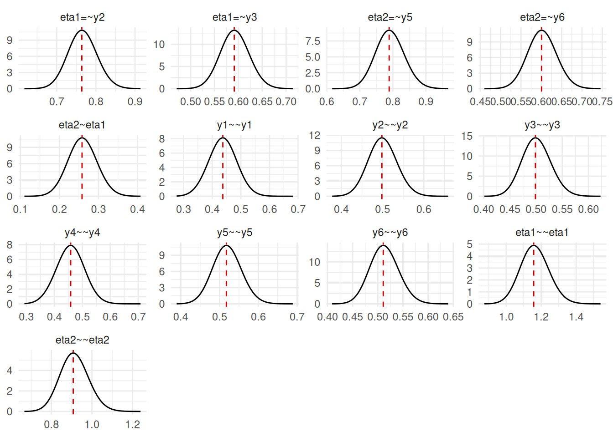

Introduction
SEMs are ubiquitous in the social sciences, psychology, ecology, and other fields. The INLAvaan package (Jamil and Rue 2026b) provides a user-friendly interface for fitting Bayesian SEMs using Integrated Nested Laplace Approximations (INLA, Rue et al. 2009), based on a bespoke approximate Bayesian inference framework for SEMs (Jamil and Rue 2026a). This vignette will guide you through the basics of using INLAvaan to fit a simple SEM. Before we begin make sure you have installed the INLAvaan package from GitHub by running the commands below.
Motivating example
To motivate the use of SEMs, consider the introductory example in Song and Lee (2012): Does poorer glycemic control lead to greater severity of kidney disease? We observe three indicators of glycemic control (, , ) and three indicators of kidney disease severity (, , ).
| Indicator | Description | Unit | |
|---|---|---|---|
| HbA1c | 3-month avg. blood glucose | % | |
| FPG | Fasting plasma glucose | mmol/L | |
| Insulin | Fasting insulin level | μU/mL | |
| PCr | Plasma creatinine | μmol/L | |
| ACR | Albumin–creatinine ratio | mg/g | |
| BUN | Blood urea nitrogen | mmol/L |
Rather than fitting separate regression models for each indicator, SEM allows us to model the relationship between the latent constructs themselves, providing a clearer and more coherent representation of the underlying processes. The hypothesised SEM is illustrated by the figure below:

Data
For the two-factor SEM we described above, it is easy to simulate some data using the lavaan package to do so. The code is below:
pop_mod <- "
eta1 =~ 1*y1 + 0.8*y2 + 0.6*y3
eta2 =~ 1*y4 + 0.8*y5 + 0.6*y6
eta2 ~ 0.3*eta1
# Variances
y1 ~~ 0.5*y1
y2 ~~ 0.5*y2
y3 ~~ 0.5*y3
y4 ~~ 0.5*y4
y5 ~~ 0.5*y5
y6 ~~ 0.5*y6
eta1 ~~ 1*eta1
eta2 ~~ 1*eta2
"
set.seed(123)
dat <- lavaan::simulateData(pop_mod, sample.nobs = 1000)
str(dat)
#> 'data.frame': 1000 obs. of 6 variables:
#> $ y1: num 1.146 1.495 -1.246 -0.109 1.092 ...
#> $ y2: num 0.911 0.724 -1.26 0.765 2.198 ...
#> $ y3: num 0.922 -0.208 -0.486 -0.7 1.305 ...
#> $ y4: num -0.142 -0.379 -0.962 0.381 -2.822 ...
#> $ y5: num 0.229 -0.5 -0.94 -1.222 -1.552 ...
#> $ y6: num -0.436 -0.219 -2.159 0.484 0.839 ...From the code above, note the true values of the parameters, including the factor loadings , regression coefficient between the two latent variables, as well as the residual and latent variances and respectively.
Model fit
Now that we have simulated some data, we can fit the SEM using INLAvaan. The model syntax is similar to that of lavaan, making it easy to specify the model. For further details on the model syntax, refer to the lavaan website. INLAvaan provides mirror functions for the main model fitting functions in lavaan:
-
acfa()mirrorslavaan::cfa()for confirmatory factor analysis; and -
asem()mirrorslavaan::sem()for structural equation models; -
agrowth()mirrorslavaan::growth()for latent growth curve models.
The code to fit the SEM model is below:
mod <- "
eta1 =~ y1 + y2 + y3
eta2 =~ y4 + y5 + y6
eta2 ~ eta1
"
fit <- asem(mod, dat)
#> ℹ Mode finding and Hessian computation.
#> ✔ Posterior mode and Hessian. [285ms]
#>
#> ℹ Performing VB correction.
#> ✔ VB correction; mean |δ| = 0.055σ. [133ms]
#>
#> ⠙ Fitting 0/13 skew-normal marginals.
#> ✔ Fit 13/13 skew-normal marginals. [407ms]
#>
#> ℹ Adjusting copula correlations (NORTA).
#> ✔ Adjust copula correlations (NORTA). [75ms]
#>
#> ⠙ Posterior sampling and summarising.
#> ✔ Summarise 1000 posterior draws. [988ms]
#>
#> ℹ Fit measures: PPP, DIC, LOO, WAIC.As with lavaan::sem(), this model is fitted without a mean structure by default (meanstructure = FALSE). Rather than profiling the means out as lavaan does, INLAvaan assigns the saturated means flat priors and marginalises them analytically, which keeps the likelihood a proper Bayesian object. Intercepts can instead be modelled explicitly with meanstructure = TRUE. See the mean structures article for how the two treatments relate and when model comparisons across them are meaningful.
INLAvaan computes an approximation to the posterior density by way of a Laplace approximation (Tierney et al. 1989; Jamil and Rue 2026a). The joint mode and the Hessian needs to be computed, which gives a Gaussian distribution for the joint posterior of the parameters. The default method for optimisation is stats::nlminb(), but other optimisers can be used by specifying optim_method = "ucminf" for the ucminf package or optim_method = "optim" to call the stats::optim() function with method "BFGS".
From this, marginal posterior distributions for each parameter can be obtained by one of several ways, including 1) Skew normal fitting (marginal_method = "skewnorm", the default method, see Chiuchiolo et al. 2023); 2) Two-piece asymmetric Gaussian fitting (marginal_method = "asymgaus", see Martins et al. 2013); 3) Direct marginalisation of the joint Gaussian posterior (marginal_method = "marggaus"); and 4) Sampling from the joint Gaussian posterior (marginal_method = "sampling").
Once the marginal posterior distributions have been obtained, we can further use these to compute any derived quantities of interest via copula sampling. The posterior predictive p-values (Gelman et al. 1996) and Deviance Information Criterion (DIC, Spiegelhalter et al. 2002) are computed this way. Under the default test = "standard", leave-one-out cross-validation and WAIC results (see the model comparison section below) are also computed at fit time and stored with the fit, whenever the model supports them and the additional cost is small. Often, the posterior sampling takes longer than the model fitting itself, so the number of samples can be controlled via the nsamp argument (default is nsamp = 1000), or the post-fitting computations can be skipped altogether (test = "none").
Methods
The resulting object is of class INLAvaan, a subclass of lavaan objects.
str(fit, 1)
#> Formal class 'INLAvaan' [package "INLAvaan"] with 21 slots
fit
#> INLAvaan 0.2.5.9004 ended normally after 64 iterations
#>
#> Estimator BAYES
#> Optimization method NLMINB
#> Number of model parameters 13
#>
#> Number of observations 1000
#>
#> Model Test (User Model):
#>
#> Marginal log-likelihood -8084.532
#> PPP (Chi-square) 0.316As a result, most of the methods that work for lavaan objects will also work for INLAvaan objects. The most common ones are probably coef() and summary().
# Inspect coefficients
coef(fit)
#> eta1=~y2 eta1=~y3 eta2=~y5 eta2=~y6 eta2~eta1 y1~~y1 y2~~y2
#> 0.873 0.601 0.786 0.582 0.272 0.487 0.499
#> y3~~y3 y4~~y4 y5~~y5 y6~~y6 eta1~~eta1 eta2~~eta2
#> 0.489 0.476 0.465 0.523 1.052 0.934
# Summary of results
summary(fit)
#> INLAvaan 0.2.5.9004 ended normally after 64 iterations
#>
#> Estimator BAYES
#> Optimization method NLMINB
#> Number of model parameters 13
#>
#> Number of observations 1000
#>
#> Model Test (User Model):
#>
#> Marginal log-likelihood -8084.532
#> PPP (Chi-square) 0.316
#>
#> Information Criteria:
#>
#> Deviance (DIC) 16063.435
#> Effective parameters (pD) 13.080
#>
#> Parameter Estimates:
#>
#> Marginalisation method SKEWNORM
#> VB correction TRUE
#>
#> Latent Variables:
#> Estimate SD 2.5% 97.5% NMAD Prior
#> eta1 =~
#> y1 1.000
#> y2 0.873 0.042 0.792 0.958 0.005 normal(0,10)
#> y3 0.601 0.032 0.540 0.665 0.003 normal(0,10)
#> eta2 =~
#> y4 1.000
#> y5 0.786 0.042 0.707 0.870 0.006 normal(0,10)
#> y6 0.582 0.034 0.517 0.650 0.003 normal(0,10)
#>
#> Regressions:
#> Estimate SD 2.5% 97.5% NMAD Prior
#> eta2 ~
#> eta1 0.272 0.038 0.198 0.348 0.001 normal(0,10)
#>
#> Variances:
#> Estimate SD 2.5% 97.5% NMAD Prior
#> .y1 0.487 0.047 0.395 0.580 0.004 gamma(1,.5)[sd]
#> .y2 0.499 0.039 0.425 0.577 0.002 gamma(1,.5)[sd]
#> .y3 0.489 0.027 0.439 0.544 0.000 gamma(1,.5)[sd]
#> .y4 0.476 0.050 0.379 0.574 0.006 gamma(1,.5)[sd]
#> .y5 0.465 0.035 0.399 0.535 0.002 gamma(1,.5)[sd]
#> .y6 0.523 0.028 0.470 0.581 0.000 gamma(1,.5)[sd]
#> eta1 1.052 0.077 0.906 1.209 0.003 gamma(1,.5)[sd]
#> .eta2 0.934 0.073 0.797 1.082 0.004 gamma(1,.5)[sd]It’s possible to request posterior medians and modes in the summary output by specifying postmedian = TRUE or postmode = TRUE in the summary() function.
Predictions
Predicted values for the latent variables can be obtained using the predict() function. This is done by sampling from the posterior distributions of the latent variables given the observed data. The function also supports predictions for observed variables (e.g. type = "ov") and missing data imputation, respecting multilevel structure if present.
This is an S3 object with a summary method that provides posterior means and credible intervals for the latent variables. Alternatively, the user is welcome to perform their own summary statistics on the list of posterior samples returned by predict().
summ_eta <- summary(eta_preds)
str(summ_eta)
#> List of 7
#> $ group_id: NULL
#> $ Mean : num [1:1000, 1:2] 0.9486 0.7523 -1.1022 0.0339 1.3809 ...
#> ..- attr(*, "dimnames")=List of 2
#> .. ..$ : NULL
#> .. ..$ : chr [1:2] "eta1" "eta2"
#> $ SD : num [1:1000, 1:2] 0.461 0.421 0.451 0.412 0.414 ...
#> ..- attr(*, "dimnames")=List of 2
#> .. ..$ : NULL
#> .. ..$ : chr [1:2] "eta1" "eta2"
#> $ 2.5% : num [1:1000, 1:2] 0.2009 -0.0306 -2.0993 -0.7831 0.5795 ...
#> ..- attr(*, "dimnames")=List of 2
#> .. ..$ : NULL
#> .. ..$ : chr [1:2] "eta1" "eta2"
#> $ 50% : num [1:1000, 1:2] 0.8701 0.7347 -1.0661 0.0155 1.4003 ...
#> ..- attr(*, "dimnames")=List of 2
#> .. ..$ : NULL
#> .. ..$ : chr [1:2] "eta1" "eta2"
#> $ 97.5% : num [1:1000, 1:2] 1.949 1.65 -0.411 0.811 2.273 ...
#> ..- attr(*, "dimnames")=List of 2
#> .. ..$ : NULL
#> .. ..$ : chr [1:2] "eta1" "eta2"
#> $ Mode : num [1:1000, 1:2] 0.8178 0.7294 -0.9755 -0.0624 1.4156 ...
#> ..- attr(*, "dimnames")=List of 2
#> .. ..$ : NULL
#> .. ..$ : chr [1:2] "eta1" "eta2"
#> - attr(*, "class")= chr "summary.predict.inlavaan_internal"
head(summ_eta$Mean)
#> eta1 eta2
#> [1,] 0.94862299 -0.00171860
#> [2,] 0.75234902 -0.30954587
#> [3,] -1.10218436 -1.24392813
#> [4,] 0.03388246 -0.08880279
#> [5,] 1.38090771 -1.55316748
#> [6,] -1.75458945 -0.92234954Predictive checks
The generative side of the model is exposed by sampling(), which draws parameters, latent variables, or observed variables from the posterior (or prior) generative SEM, and by simulate(), which produces complete replicate data sets from the fitted model.
yrep <- simulate(fit, nsim = 1, seed = 1)
head(yrep[[1]])
#> y1 y2 y3 y4 y5 y6
#> 1 0.8815117 1.4614649 -0.2676955 -1.562767776 -1.4735554 -0.7340580
#> 2 2.3149741 1.6291900 0.3387601 2.144584058 0.5775957 0.2953239
#> 3 -0.3180181 0.5517283 -1.3670586 -2.450991040 -2.9069360 -1.1067340
#> 4 -0.8741058 1.9192487 -0.2864483 -0.786006621 -0.4586870 -0.6205432
#> 5 -2.9244246 -1.3076265 -1.4116572 -2.174296573 -1.3167004 -0.6295747
#> 6 -1.4214290 -0.3727369 -1.0338816 0.003341353 -0.2033855 1.0597973Comparing such replicates with the observed data is the basis of prior and posterior predictive checking. The predictive checks article walks through that workflow, and the sampling article explains the machinery behind it.
Fit measures
Global fit measures are collected by fitmeasures(): the PPP and DIC mentioned earlier, Bayesian analogues of the classical fit indices (BRMSEA, BGammaHat, and related indices), and the LOO and WAIC measures of the model comparison section below when these are stored with the fit.
fitmeasures(fit)
#> npar margloglik ppp dic p_dic BRMSEA
#> 13 -8084.532 0.316 16063.435 13.080 0.066
#> BGammaHat adjBGammaHat BMc elpd_loo p_loo looic
#> 0.989 0.970 0.983 -8021.957 13.040 16043.915
#> se_loo elpd_waic p_waic waic se_waic
#> 107.965 -8022.060 13.087 16044.120 108.055Definitions and worked examples are in the Bayesian fit indices article.
Diagnostics
The diagnostics() function reports convergence and approximation-quality metrics for the fitted model. Global diagnostics (type = "global") check whether the optimiser converged, and quantify how well the skew-normal marginals match the joint posterior (via KL divergence and NMAD). Per-parameter diagnostics (type = "param") provide gradient norms and KL contributions for each free parameter, which is useful for identifying any problematic parameters.
diagnostics(fit)
#> npar nsamp converged iterations grad_inf
#> 13 1000 1 64 3.46e-03
#> grad_inf_rel grad_l2 mode_shift_max hess_cond vb_applied
#> 7.60e-02 6.60e-03 4.33e-04 2.99e+01 1
#> vb_kld_global kld_max kld_mean nmad_max nmad_mean
#> 6.3014 0.0087 0.0023 0.0064 0.0031The timing() function reports how long each computation stage took, which can help identify bottlenecks when scaling to larger models.
timing(fit)
#> total
#> 1.98 sPlot
A simple plot method is provided to view the marginal posterior distributions of the parameters. The vertical lines indicate the posterior mode.
plot(fit)
Model comparison
In addition to several global fit indices (i.e. PPP, DIC), it is possible to compare models by way of Bayes factors using the compare() function. This function takes two INLAvaan objects and computes the Bayes factor using the Laplace approximations to the marginal likelihoods.
mod2 <- "
# A model with uncorrelated factors
eta1 =~ y1 + y2 + y3
eta2 =~ y4 + y5 + y6
eta1 ~~ 0*eta2
"
fit2 <- asem(mod2, dat)
#> ℹ Mode finding and Hessian computation.
#> ✔ Posterior mode and Hessian. [97ms]
#>
#> ℹ Performing VB correction.
#> ✔ VB correction; mean |δ| = 0.036σ. [86ms]
#>
#> ⠙ Fitting 0/12 skew-normal marginals.
#> ⠹ Fitting 2/12 skew-normal marginals.
#> ✔ Fit 12/12 skew-normal marginals. [291ms]
#>
#> ℹ Adjusting copula correlations (NORTA).
#> ✔ Adjust copula correlations (NORTA). [46ms]
#>
#> ⠙ Posterior sampling and summarising.
#> ✔ Summarise 1000 posterior draws. [1.1s]
#>
#> ℹ Fit measures: PPP, DIC, LOO, WAIC.
compare(fit, fit2)
#> Bayesian Model Comparison (INLAvaan)
#> Models ordered by marginal log-likelihood
#>
#> Model npar Marg.Loglik logBF DIC pD
#> fit 13 -8084.532 0.000 16063.43 13.080
#> fit2 12 -8104.369 -19.837 16113.72 12.187As a note, there have been several criticisms of the use of Bayes factors for model comparison, particularly in the context of SEMs (Tendeiro and Kiers 2019; Schad et al. 2023). Leave-one-out cross-validation (LOO, Vehtari et al. 2017) and the widely applicable information criterion (WAIC, Watanabe 2010) are popular alternatives which compare models on out-of-sample predictive accuracy instead; see Merkle et al. (2019) for their use with latent variable models. Both are implemented in INLAvaan. The function loo() requires neither refitting nor sampling, computing the statistic using a Taylor approximation of the case-deletion posterior, while waic() reuses the fit’s own posterior draws.
loo(fit)
#> Taylor leave-one-subject-out cross-validation (INLAvaan)
#> Computed from 1000 subjects (second-order Taylor approximation)
#>
#> Estimate SE
#> elpd_loo -8022.0 54.0
#> p_loo 13.0 0.5
#> looic 16043.9 108.0To compare models on this predictive scale, pass loo = TRUE to compare(). Models are sorted by expected log predictive density (ELPD), with paired standard errors for the ELPD differences.
compare(fit, fit2, loo = TRUE)
#> Bayesian Model Comparison (INLAvaan)
#> Models ordered by ELPD (Taylor LOO)
#> elpd_diff/se_diff are paired differences vs the best model
#>
#> Model npar Marg.Loglik logBF DIC pD ELPD SE p_loo
#> fit 13 -8084.532 0.000 16063.43 13.080 -8021.957 53.982 13.040
#> fit2 12 -8104.369 -19.837 16113.72 12.187 -8046.997 54.288 12.013
#> elpd_diff se_diff
#> 0.00 0.000
#> -25.04 7.143See the cross-validation article for the methodology and more advanced usage, including multigroup and two-level models, missing data, and scoring submodels without refitting.
Setting priors
The INLAvaan package uses the same prior specification syntax as blavaan (Merkle and Rosseel 2018; Merkle et al. 2021), as detailed here. Essentially, there are two ways to set priors for model parameters: 1) Globally for all parameters of a certain type (e.g., all factor loadings, all regression coefficients, etc.); and 2) Individually for specific parameters in the model syntax.
The default global priors are similar to those from blavaan:
priors_for() # similar to blavaan::dpriors()
#> nu alpha lambda beta
#> "normal(0,32)" "normal(0,10)" "normal(0,10)" "normal(0,10)"
#> theta psi rho tau
#> "gamma(1,.5)[sd]" "gamma(1,.5)[sd]" "beta(1,1)" "normal(0,1.5)"Note that, INLAvaan uses the separation strategy for variance matrices, and consequently places priors on correlations instead of covariances. If, instead we wished to set global priors, say a gamma distribution on variances instead of standard deviations (default), then we would do the following:
DP <- priors_for(theta = "gamma(1,1)", psi = "gamma(1,1)")
DP
#> nu alpha lambda beta theta
#> "normal(0,32)" "normal(0,10)" "normal(0,10)" "normal(0,10)" "gamma(1,1)"
#> psi rho tau
#> "gamma(1,1)" "beta(1,1)" "normal(0,1.5)"
## fit <- asem(mod, dat, dpriors = DP) # not runTo set individual priors for specific parameters, we can do so in the model syntax itself. For instance, to set a normal prior with mean 1 and standard deviation 3 for the factor loading of y3 on eta1, and a normal prior with mean 0 and standard deviation 0.5 for the regression coefficient from eta1 to eta2, we would specify the model as follows:
mod <- "
eta1 =~ y1 + y2 + prior('normal(1,3)')*y3
eta2 =~ y4 + y5 + y6
eta2 ~ prior('normal(0,.5)')*eta1
"
## fit <- asem(mod, dat) # not runDependency on R-INLA
Dependency on R-INLA has been temporarily removed for the current version of INLAvaan (>= 0.2.0). For a wide class LVMs and SEMs where the latent variables are unstructured and independent, the current implementation is sufficient. However, future versions of INLAvaan will re-introduce dependency on R-INLA to allow for more complex latent structures, such as spatial and temporal dependencies.